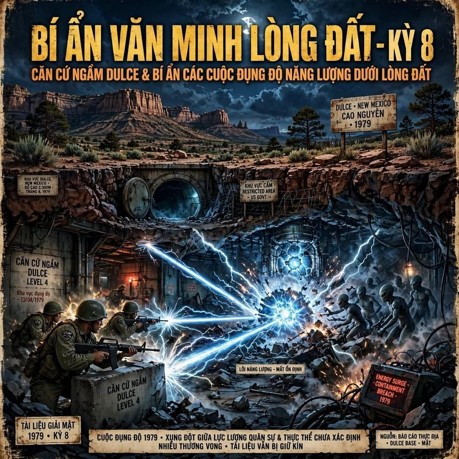
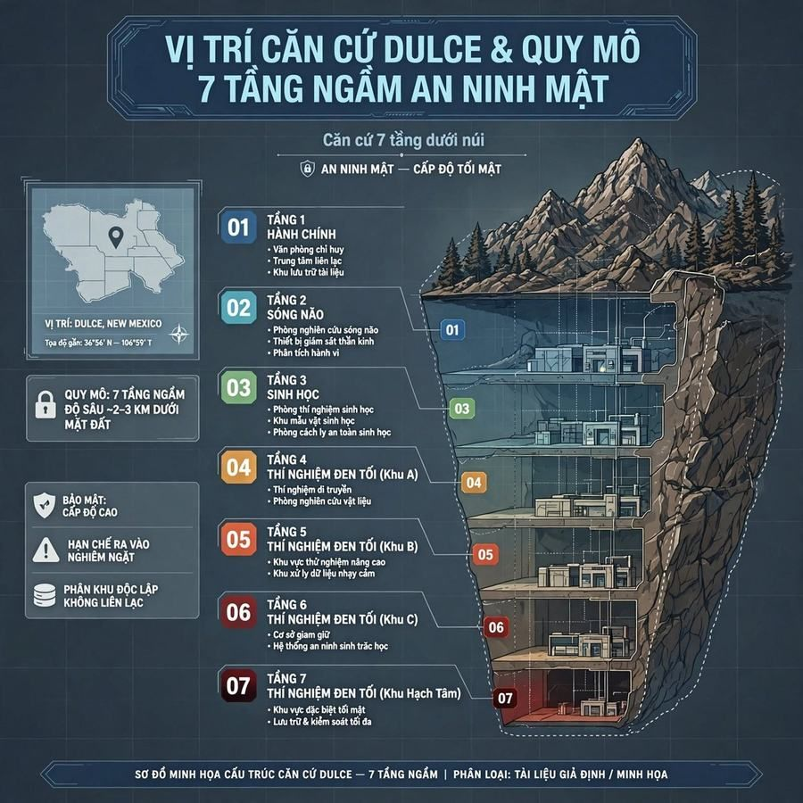
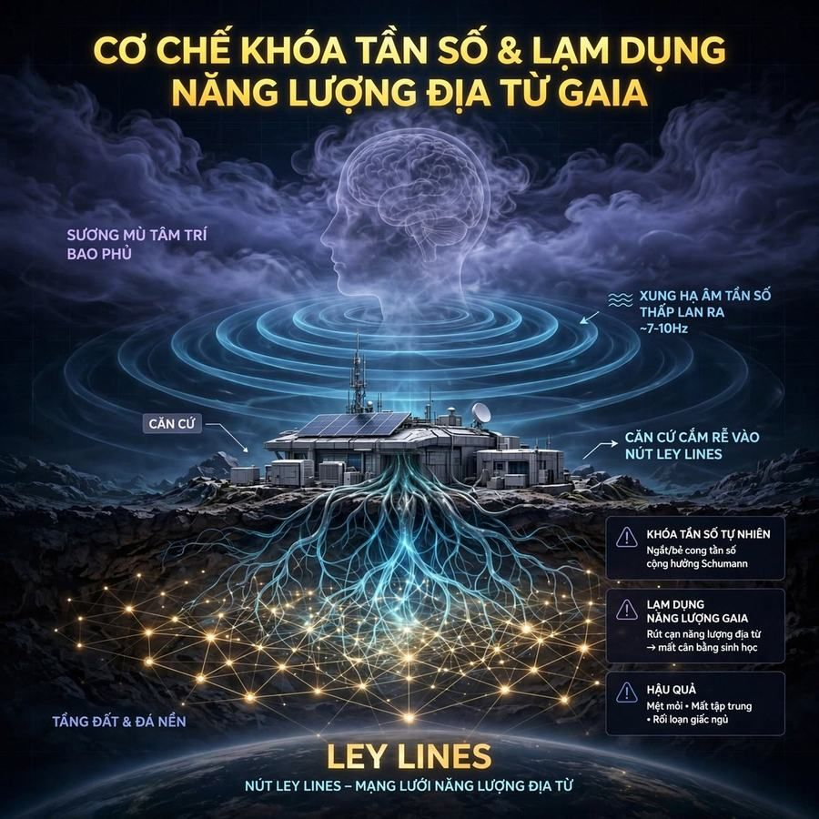
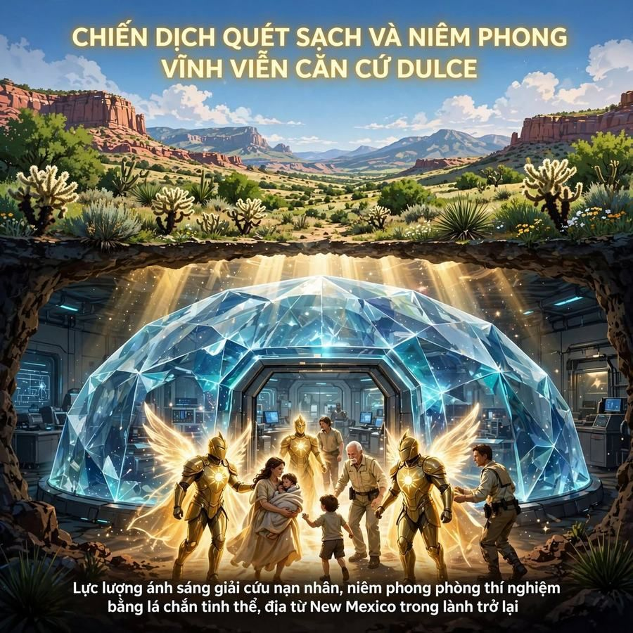

Trang chủ / Chuyên đề 4: Văn Minh Lòng Đất / Kỳ 38
Chuyên đề 4 · Kỳ 38 / 100
CĂN CỨ NGẦM DULCE & BÍ ẨN CÁC CUỘC ĐỤNG ĐỘ NĂNG LƯỢNG DƯỚI LÒNG ĐẤT

Ở Kỳ 7, chúng ta đã cùng nhau thâm nhập vào vùng đất Nam Cực băng giá để khám phá Hồ nước ngọt ấm Vostok nằm sâu 4 km dưới lòng băng, tàn tích các đại đô thị kim tự tháp cổ đại và sự thức tỉnh của chiến hạm Space Ark Nam Cực.
Hôm nay, chúng ta sẽ quay trở lại với một trong những địa danh ngầm gây chấn động và bí ẩn nhất trong lịch sử giải mật thế kỷ 20: Căn cứ ngầm Dulce nằm sâu bên dưới cao nguyên Archuleta Mesa (thuộc bang New Mexico, Mỹ).
Căn cứ ngầm Dulce thực chất là gì và được xây dựng phức tạp ra sao? Sự thật đằng sau biến cố đụng độ vũ lực lịch sử năm 1979 giữa lực lượng bề mặt và các thực thể tiêu cực dưới lòng đất diễn ra thế nào? Các công nghệ kiểm soát sóng não, trường năng lượng vô hướng và thí nghiệm di truyền đen tối bị phơi bày ra sao? Và chiến dịch vô hiệu hóa, niêm phong căn cứ ngầm Dulce của Lực lượng Liên minh Trái Đất phối hợp với Liên Đoàn Thiên Hà mang lại ý nghĩa gì cho sự giải phóng không gian lòng đất?
Hãy cùng dấn thân vào Kỳ 8: Căn Cứ Ngầm Dulce & Bí Ấn Các Cuộc Đụng Độ Năng Lượng Dưới Lòng Đất để giải mã trang sử bóng tối bị che giấu!
✦ ✦ ✦1. VỊ TRÍ CĂN CỨ DULCE & QÚY MÔ 7 TẦNG NGẦM AN NINH MẬT
Nằm ẩn mình dưới thị trấn nhỏ Dulce thuộc tiểu bang New Mexico, căn cứ ngầm Dulce từng là một trong những trung tâm nghiên cứu và vận hành phức tạp nhất của bộ máy ngầm.
A. Cấu Trúc 7 Tầng Ngầm Sâu Vô Cùng Kiên Củng
- Tầng 1 - 3 (Hành Chính & Giao Thông): Nằm ở các tầng trên cùng là trung tâm chỉ huy quân sự, kho bãi vật tư và trạm trung chuyển của hệ thống tàu điện từ Maglev nối liền với Area 51 và các căn cứ ngầm khác.
- Tầng 4 (Thao Túng Tâm Trí & Sóng Não): Nơi nghiên cứu các công nghệ sóng hạ âm, kỹ thuật điều biến trường điện từ và kiểm soát tâm trí từ xa.
- Tầng 5 (Khu Vực Sinh Học & Cơ Tế Sinh Nổi): Nơi đặt các buồng ấp nhân tạo, lưu trữ mẫu gen và các cơ sở nghiên cứu di truyền sinh học.
- Tầng 6 - 7 (Khu Vực Thí Nghiệm Đen Tối & Giam Giữ): Được mệnh danh là "Phòng Thí Nghiệm Nhai Nối" (Nightmare Hall), nơi diễn ra các thí nghiệm di truyền lại tạo tiêu cực và giam giữ các nạn nhân hoàn toàn tách biệt khỏi thế giới bên ngoài.

2. BIẾN CỐ ĐỤNG ĐỘ NĂNG LƯỢNG NĂM 1979 (THE DULCE INCIDENT)
Một trong những sự kiện bùng nổ nhất lịch sử ngầm chính là cuộc đụng độ bằng vũ lực trực tiếp diễn ra tại Tầng 6 của căn cứ Dulce vào năm 1979.
A. Nguyên Nhân Bùng Nổ Xung Đột
- Sự Phát Hiện Vi Phạm Thỏa Thuận: Lực lượng đặc nhiệm bề mặt khi tiến xuống bảo trì các thiết bị an ninh tại Tầng 6 đã bất ngờ phát hiện các thực thể tiêu cực ngoài hành tinh vi phạm nghiêm trọng các thỏa thuận ngầm, tiến hành các thí nghiệm phi đạo đức vượt quá tầm kiểm soát.
- Cuộc Nổ Súng Trong Đêm Mới: Sự việc nhanh chóng leo thang thành một cuộc giao tranh bằng vũ khí năng lượng cao tần và súng đạn quân sự giữa lực lượng đặc nhiệm bề mặt và các thực thể tiêu cực.
B. Hậu Quả & Sự Tàn Phá Công Nghệ
- Tổn Thất Nghiêm Trọng: Cuộc đụng độ đã khiến hàng chục nhân viên quân sự và kỹ sư bề mặt hy sinh. Các chùm tia laser và vũ khí hạ âm đã làm nổ tung nhiều phòng thí nghiệm, làm hư hại cấu trúc từ trường và khiến căn cứ Dulce rơi vào tình trạng phong tỏa an ninh cấp độ tối cao suốt nhiều năm sau đó.

3. CƠ CHẾ KHÓA TẦN SỐ & LẠM DỤNG NĂNG LƯỢNG ĐỊA TỪ GAIA
Căn cứ Dulce không chỉ là nơi nghiên cứu công nghệ, mà còn là một mắt lưới quan trọng trong bộ máy thao túng từ trường toàn cầu.
A. Thao Túng Các Điểm Kinh Mạch Địa Từ
- Cắm Rễ Vào Nút Năng Lượng Đất: Căn cứ được đặt ngay trên một điểm giao thoa kinh mạch địa từ (Ley Line Node) mạnh mẽ của vùng Tây Nam Bắc Mỹ.
- Biến Đổi Tần Số Tự Nhiên Thành Ma Trận Sợ Hãi: Các thế lực tiêu cực đã lạm dụng nguồn năng lượng địa từ này, phát tán các dải xung hạ âm tần số thấp vào bầu khí quyển để làm suy giảm khả năng thấu thị, gây sương mù tâm trí và kích hoạt sự sợ hãi trong cộng đồng con người bề mặt.

4. CHIẾN DỊCH QUÉT SẠCH VÀ NIÊM PHONG VĨNH VIỄN CĂN CỨ DULCE
Thực tại u tối tại Dulce đã chính thức đi đến hồi kết khi dải tần số Trái Đất nâng cao và lực lượng Ánh Sáng phát động chiến dịch tổng lực.
A. Tổng Tấn Công Giải Phóng Của Lực Lượng Liên Minh
- Hợp Lực Với Liên Đoàn Thiên Hà: Lực lượng đặc nhiệm thuộc Liên minh Trái Đất phối hợp với Liên Đoàn Thế Giới Thiên Hà đã sử dụng các công nghệ xung sóng vô hướng vô hiệu hóa toàn bộ ma trận an ninh từ trường của căn cứ Dulce.
- Giải Cứu Nạn Nhân & Phá Hủy Ma Trận Nhai Nối: Toàn bộ các nạn nhân bị giam giữ tại Tầng 6 và Tầng 7 đã được giải cứu. Các phòng thí nghiệm di truyền tiêu cực bị đánh nổ và niêm phong bằng các lá chắn năng lượng tinh thể vĩnh viễn.
B. Đóng Vĩnh Viễn Các Nút Năng Lượng Tiêu Cực
- Trả Lại Sự Trong Lành Cho Địa Từ Gaia: Mắt lưới thao túng năng lượng tại Dulce bị xóa sổ hoàn toàn. Dải tần số địa từ vùng New Mexico đã được làm sạch, trả lại sự cân bằng tự nhiên cho mạng lưới năng lượng của Trái Đất.

5. LỜI KẾT KỲ 8: TỈNH THỨC RŨ BỎ SỰ SỢ HÃI MA TRẬN
Kỳ 8 của chuyên đề 4 khép lại mang đến bài học nhận thức quan trọng cho mỗi chúng ta:
- Ma Trận Bóng Tối Đã Bị Đánh Sụp: Những bóng ma thao túng dưới lòng đất như Dulce không còn sức mạnh giam cầm hay đe dọa con người. Tất cả các ổ tiêu cực ngầm đang bị quét sạch khỏi hành tinh Gaia!
- Làm Chủ Tần Số Bản Thể: Sự thật được vạch trần không phải để gieo rắc sự sợ hãi, mà để giúp bạn vững tin rằng: Khi bạn giữ vững tình yêu thương, sự bình thản và lòng từ bi, bạn đang tạo ra một lá chắn năng lượng mạnh mẽ nhất khiến mọi ma trận tiêu cực hoàn toàn không thể chạm tới!